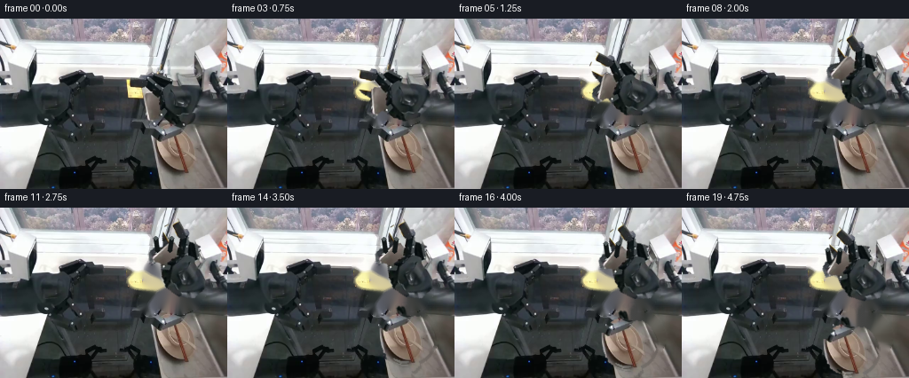
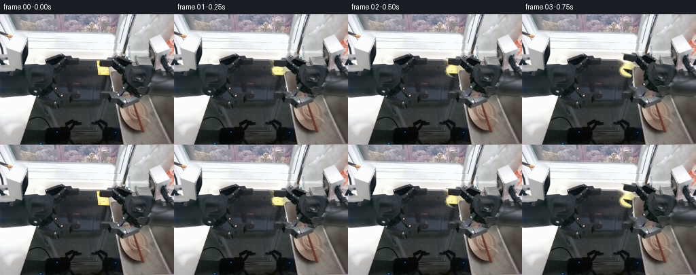
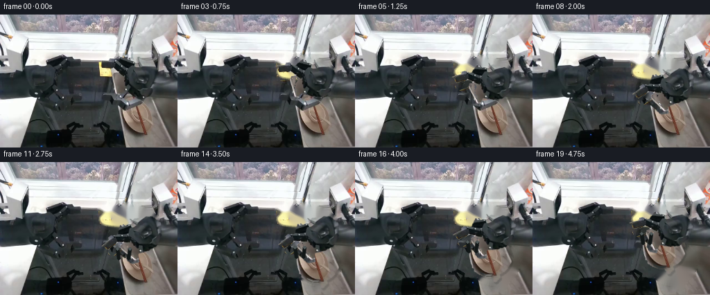
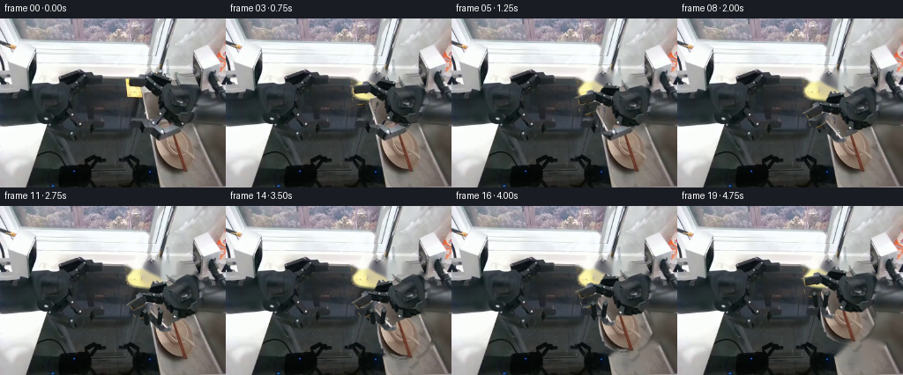
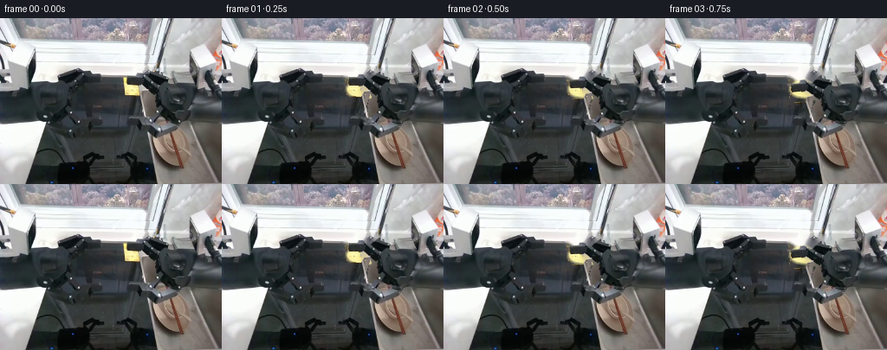
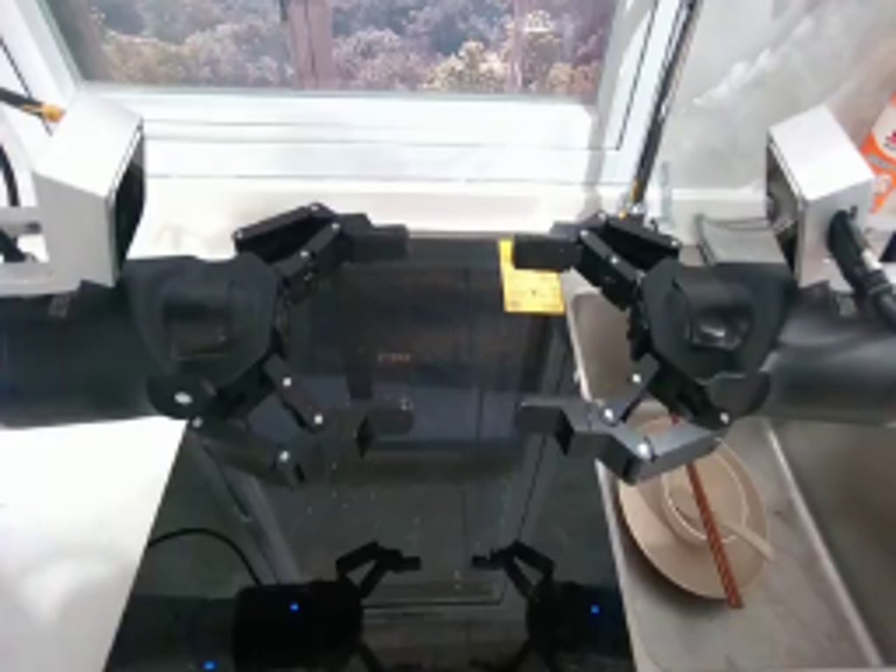

CODING AGENTS AS PIXEL WORLD MODELS
traex/GPT-5.6-Sol · common50_0004
点击播放 · 原生 RGB 像素
逐轮保存的候选
回放视频、检查图与代码变化。
每份候选均可单独播放。实际图片检查记录在下方工具轨迹中。
候选 01播放与检查图
点击播放 · 原生 RGB 像素


展开代码变化
--- 上一保存版本
+++ 本次保存版本
@@ -0,0 +1,143 @@
+from pathlib import Path
+import math
+import cv2
+import numpy as np
+from PIL import Image
+import artifact_io
+
+CASE = Path(__file__).resolve().parent
+SRC = np.array(Image.open(CASE / 'first_frame.png').convert('RGB'), dtype=np.uint8)
+H, W = SRC.shape[:2]
+
+
+def smoothstep(x):
+ x = float(np.clip(x, 0.0, 1.0))
+ return x*x*(3.0-2.0*x)
+
+
+def affine_about(angle_deg, center=(219.0, 89.0)):
+ # OpenCV's positive image-angle turns counter-clockwise visually.
+ return cv2.getRotationMatrix2D(center, angle_deg, 1.0).astype(np.float32)
+
+
+def warp_rgb_alpha(rgb, alpha, mat):
+ wrgb = cv2.warpAffine(rgb, mat, (W,H), flags=cv2.INTER_CUBIC,
+ borderMode=cv2.BORDER_CONSTANT, borderValue=(0,0,0))
+ wa = cv2.warpAffine(alpha, mat, (W,H), flags=cv2.INTER_CUBIC,
+ borderMode=cv2.BORDER_CONSTANT, borderValue=0)
+ return wrgb, wa
+
+
+def composite(base, layer, alpha):
+ a = alpha.astype(np.float32)[...,None] / 255.0
+ return np.clip(layer.astype(np.float32)*a + base.astype(np.float32)*(1-a),0,255).astype(np.uint8)
+
+# Isolate the image-right manipulator's rotating rigid assembly. The shoulder/base
+# stays fixed; this distal assembly turns around the visible circular shoulder axis.
+arm_poly = np.array([
+ [143,63],[153,59],[164,65],[170,70],[182,61],[198,63],[212,70],
+ [226,81],[229,96],[219,110],[203,117],[187,114],[176,108],
+ [169,119],[160,114],[158,106],[163,97],[151,92],[143,84]
+], np.int32)
+arm_region = np.zeros((H,W), np.uint8)
+cv2.fillPoly(arm_region, [arm_poly], 255)
+gray = cv2.cvtColor(SRC, cv2.COLOR_RGB2GRAY)
+# Keep the dark/metal body and also a narrow set of structural silhouettes.
+arm_alpha = np.zeros((H,W), np.uint8)
+arm_alpha[(arm_region>0) & (gray<145)] = 255
+# Close tiny anti-aliased gaps while retaining the mechanical outline.
+arm_alpha = cv2.morphologyEx(arm_alpha, cv2.MORPH_CLOSE, np.ones((3,3),np.uint8))
+# Preserve the small silver wrist links and their bolts.
+for p in [np.array([[158,89],[177,94],[183,105],[174,112],[160,105],[151,97]],np.int32),
+ np.array([[176,67],[205,67],[219,78],[211,89],[184,83]],np.int32)]:
+ tmp=np.zeros((H,W),np.uint8); cv2.fillPoly(tmp,[p],255)
+ arm_alpha=np.maximum(arm_alpha, cv2.bitwise_and(tmp,arm_region))
+# Feather only the outer one-pixel contour for clean native-resolution rotation.
+arm_alpha = cv2.GaussianBlur(arm_alpha,(3,3),0.55)
+
+# Remove the original moving assembly to reveal a fixed workspace. Telea filling is
+# constrained to this compact footprint and uses nearby sink/window texture.
+erase_arm = cv2.dilate((arm_alpha>20).astype(np.uint8)*255, np.ones((5,5),np.uint8))
+clean_workspace = cv2.inpaint(cv2.cvtColor(SRC,cv2.COLOR_RGB2BGR), erase_arm, 4, cv2.INPAINT_TELEA)
+clean_workspace = cv2.cvtColor(clean_workspace,cv2.COLOR_BGR2RGB)
+
+# The plate, bowl and the pair of brown chopsticks form one grasped payload. The
+# soft elliptical mask follows the visible plate perimeter; the long-stick mask
+# retains the tips that project past it.
+obj_alpha = np.zeros((H,W),np.uint8)
+cv2.ellipse(obj_alpha,(202,146),(31,28),0,0,360,255,-1,cv2.LINE_AA)
+cv2.line(obj_alpha,(194,112),(210,179),255,5,cv2.LINE_AA)
+cv2.line(obj_alpha,(198,112),(214,176),255,4,cv2.LINE_AA)
+# Clip away obvious sink pixels inside the ellipse based on warm/beige chroma,
+# but leave the central bowl intact as a contiguous physical object.
+r,g,b = [SRC[...,i].astype(np.int16) for i in range(3)]
+warm = (r > b+5) & (r > g-5) & (r>72)
+plate_core=np.zeros((H,W),np.uint8); cv2.ellipse(plate_core,(202,146),(29,25),0,0,360,255,-1)
+obj_alpha = np.where(((obj_alpha>0)&warm) | (plate_core>0),255,0).astype(np.uint8)
+# Explicit chopsticks, including their darker portions.
+cv2.line(obj_alpha,(194,112),(210,179),255,4,cv2.LINE_AA)
+cv2.line(obj_alpha,(198,112),(214,176),255,3,cv2.LINE_AA)
+obj_alpha=cv2.GaussianBlur(obj_alpha,(3,3),0.55)
+obj_erase=cv2.dilate((obj_alpha>20).astype(np.uint8)*255,np.ones((5,5),np.uint8))
+workspace_without_payload=cv2.inpaint(cv2.cvtColor(clean_workspace,cv2.COLOR_RGB2BGR),obj_erase,5,cv2.INPAINT_TELEA)
+workspace_without_payload=cv2.cvtColor(workspace_without_payload,cv2.COLOR_BGR2RGB)
+
+pivot=np.array([219.0,89.0],np.float32)
+grip_ref=np.array([160.0,95.0,1.0],np.float32)
+mat_grasp=affine_about(-60.0)
+grip_at_grasp=mat_grasp@grip_ref
+
+frames=[]
+for i in range(20):
+ if i==0:
+ frames.append(SRC.copy())
+ continue
+ # deliberate reach, a brief stable closure, then a smooth lift
+ if i<=10:
+ angle=-60.0*smoothstep((i-1)/9.0)
+ elif i<=13:
+ angle=-60.0
+ else:
+ angle=-60.0+18.0*smoothstep((i-13)/6.0)
+ mat=affine_about(angle)
+ grip_now=mat@grip_ref
+
+ if i<=13:
+ base=clean_workspace.copy()
+ else:
+ base=workspace_without_payload.copy()
+ # The firmly grasped dish stack follows the wrist without deformation.
+ dx,dy=(grip_now-grip_at_grasp)
+ om=np.array([[1,0,float(dx)],[0,1,float(dy)]],np.float32)
+ obj_rgb=cv2.warpAffine(SRC,om,(W,H),flags=cv2.INTER_CUBIC,borderMode=cv2.BORDER_CONSTANT)
+ oa=cv2.warpAffine(obj_alpha,om,(W,H),flags=cv2.INTER_CUBIC,borderMode=cv2.BORDER_CONSTANT)
+ # a restrained contact shadow beneath the payload reinforces depth
+ shmat=np.array([[1,0,float(dx)+2],[0,1,float(dy)+3]],np.float32)
+ shadow=cv2.warpAffine(obj_alpha,shmat,(W,H),flags=cv2.INTER_LINEAR,borderMode=cv2.BORDER_CONSTANT)
+ shade=np.zeros_like(base); shade[:]=[25,25,24]
+ base=composite(base,shade,(shadow.astype(np.float32)*0.18).astype(np.uint8))
+ base=composite(base,obj_rgb,oa)
+
+ arm_rgb,aa=warp_rgb_alpha(SRC,arm_alpha,mat)
+ frame=composite(base,arm_rgb,aa)
+
+ # During closure and lift, dark rigid fingertips visibly clamp opposite sides
+ # of the plate/bowl stack. They move as part of the wrist and do not deform.
+ if i>=11:
+ overlay=frame.copy()
+ c=(int(round(grip_now[0])),int(round(grip_now[1])))
+ close=smoothstep((i-10)/2.0)
+ spread=int(round(11-4*close))
+ # jaws align with the rotated tool: short opposing, anti-aliased prongs
+ cv2.line(overlay,(c[0]-spread,c[1]-7),(c[0]-spread+2,c[1]+7),(18,23,23),4,cv2.LINE_AA)
+ cv2.line(overlay,(c[0]+spread,c[1]-7),(c[0]+spread-2,c[1]+7),(18,23,23),4,cv2.LINE_AA)
+ cv2.circle(overlay,(c[0]-spread,c[1]-7),2,(82,91,91),-1,cv2.LINE_AA)
+ cv2.circle(overlay,(c[0]+spread,c[1]-7),2,(82,91,91),-1,cv2.LINE_AA)
+ frame=overlay
+
+ frames.append(frame.astype(np.uint8))
+
+frames=np.stack(frames,axis=0)
+assert frames.shape==(20,192,256,3) and frames.dtype==np.uint8
+assert np.array_equal(frames[0],SRC)
+artifact_io.save(frames,CASE)
候选 02播放与检查图
点击播放 · 原生 RGB 像素

展开代码变化
--- 上一保存版本
+++ 本次保存版本
@@ -54,6 +54,9 @@
arm_alpha=np.maximum(arm_alpha, cv2.bitwise_and(tmp,arm_region))
# Feather only the outer one-pixel contour for clean native-resolution rotation.
arm_alpha = cv2.GaussianBlur(arm_alpha,(3,3),0.55)
+# Never pick up the bright yellow calibration note behind the arm.
+yellow_note = (SRC[...,0] > 115) & (SRC[...,1] > 95) & (SRC[...,2] < 105)
+arm_alpha[yellow_note] = 0
# Remove the original moving assembly to reveal a fixed workspace. Telea filling is
# constrained to this compact footprint and uses nearby sink/window texture.
@@ -84,7 +87,7 @@
pivot=np.array([219.0,89.0],np.float32)
grip_ref=np.array([160.0,95.0,1.0],np.float32)
-mat_grasp=affine_about(-60.0)
+mat_grasp=affine_about(40.0)
grip_at_grasp=mat_grasp@grip_ref
frames=[]
@@ -94,11 +97,11 @@
continue
# deliberate reach, a brief stable closure, then a smooth lift
if i<=10:
- angle=-60.0*smoothstep((i-1)/9.0)
+ angle=40.0*smoothstep((i-1)/9.0)
elif i<=13:
- angle=-60.0
+ angle=40.0
else:
- angle=-60.0+18.0*smoothstep((i-13)/6.0)
+ angle=40.0-25.0*smoothstep((i-13)/6.0)
mat=affine_about(angle)
grip_now=mat@grip_ref
候选 03播放与检查图

候选 04播放与检查图
点击播放 · 原生 RGB 像素

展开代码变化
--- 上一保存版本
+++ 本次保存版本
@@ -87,7 +87,7 @@
pivot=np.array([219.0,89.0],np.float32)
grip_ref=np.array([160.0,95.0,1.0],np.float32)
-mat_grasp=affine_about(40.0)
+mat_grasp=affine_about(33.0)
grip_at_grasp=mat_grasp@grip_ref
frames=[]
@@ -97,11 +97,11 @@
continue
# deliberate reach, a brief stable closure, then a smooth lift
if i<=10:
- angle=40.0*smoothstep((i-1)/9.0)
+ angle=33.0*smoothstep((i-1)/9.0)
elif i<=13:
- angle=40.0
+ angle=33.0
else:
- angle=40.0-25.0*smoothstep((i-13)/6.0)
+ angle=33.0-22.0*smoothstep((i-13)/6.0)
mat=affine_about(angle)
grip_now=mat@grip_ref
候选 05播放与检查图
候选 06播放与检查图
点击播放 · 原生 RGB 像素


展开代码变化
--- 上一保存版本
+++ 本次保存版本
@@ -97,7 +97,7 @@
continue
# deliberate reach, a brief stable closure, then a smooth lift
if i<=10:
- angle=33.0*smoothstep((i-1)/9.0)
+ angle=33.0*smoothstep(i/10.0)
elif i<=13:
angle=33.0
else:
可观测工具轨迹
实际执行的命令与返回图片。
命令 1exit 0
/bin/bash -lc "cat prompt.txt && printf '\\n---RULES---\\n' && cat GENERATION_RULES.md"
命令 2exit 1
/bin/bash -lc "find . -maxdepth 2 -type f -printf '%p\\n' | sort && printf '\\nTOOLS\\n' && command -v ffmpeg && command -v python3 && python3 - <<'PY'
try:
import cv2; print('cv2',cv2.__version__)
except Exception as e: print('no cv2',e)
try:
import PIL; print('PIL',PIL.__version__)
except Exception as e: print('no PIL',e)
PY"命令 3exit 0
/bin/bash -lc "cat task_spec.json && printf '\\n---artifact_io---\\n' && sed -n '1,240p' artifact_io.py"
命令 4exit 0
/bin/bash -lc 'for x in python python3 ffmpeg convert magick; do command -v "$x" || true; done; python3 - <<'"'PY' mods=['numpy','PIL','cv2','imageio','scipy'] for m in mods: try: x=__import__(m); print(m,getattr(x,'__version__','ok')) except Exception as e: print(m,'NO',e) PY"
命令 5exit 0
/bin/bash -lc "python3 - <<'PY'
from PIL import Image
im=Image.open('first_frame.png')
im.resize((1024,768)).save('.tmp/up.png')
PY"命令 6exit 0
/bin/bash -lc "python3 - <<'PY'
import cv2, numpy as np
im=cv2.imread('first_frame.png')[:,:,::-1]
pts=[(200,145),(190,145),(180,145),(218,145),(200,160),(202,125),(210,170),(230,145),(170,145),(192,126),(210,160)]
for x,y in pts: print((x,y),im[y,x])
PY"命令 7exit 0
/bin/bash -lc "cat > generate.py <<'PY'
from pathlib import Path
import math
import cv2
import numpy as np
from PIL import Image
import artifact_io
CASE = Path(__file__).resolve().parent
SRC = np.array(Image.open(CASE / 'first_frame.png').convert('RGB'), dtype=np.uint8)
H, W = SRC.shape[:2]
def smoothstep(x):
x = float(np.clip(x, 0.0, 1.0))
return x*x*(3.0-2.0*x)
def affine_about(angle_deg, center=(219.0, 89.0)):
# OpenCV's positive image-angle turns counter-clockwise visually.
return cv2.getRotationMatrix2D(center, angle_deg, 1.0).astype(np.float32)
def warp_rgb_alpha(rgb, alpha, mat):
wrgb = cv2.warpAffine(rgb, mat, (W,H), flags=cv2.INTER_CUBIC,
borderMode=cv2.BORDER_CONSTANT, borderValue=(0,0,0))
wa = cv2.warpAffine(alpha, mat, (W,H), flags=cv2.INTER_CUBIC,
borderMode=cv2.BORDER_CONSTANT, borderValue=0)
return wrgb, wa
def composite(base, layer, alpha):
a = alpha.astype(np.float32)[...,None] / 255.0
return np.clip(layer.astype(np.float32)*a + base.astype(np.float32)*(1-a),0,255).astype(np.uint8)
# Isolate the image-right manipulator's rotating rigid assembly. The shoulder/base
# stays fixed; this distal assembly turns around the visible circular shoulder axis.
arm_poly = np.array([
[143,63],[153,59],[164,65],[170,70],[182,61],[198,63],[212,70],
[226,81],[229,96],[219,110],[203,117],[187,114],[176,108],
[169,119],[160,114],[158,106],[163,97],[151,92],[143,84]
], np.int32)
arm_region = np.zeros((H,W), np.uint8)
cv2.fillPoly(arm_region, [arm_poly], 255)
gray = cv2.cvtColor(SRC, cv2.COLOR_RGB2GRAY)
# Keep the dark/metal body and also a narrow set of structural silhouettes.
arm_alpha = np.zeros((H,W), np.uint8)
arm_alpha[(arm_region>0) & (gray<145)] = 255
# Close tiny anti-aliased gaps while retaining the mechanical outline.
arm_alpha = cv2.morphologyEx(arm_alpha, cv2.MORPH_CLOSE, np.ones((3,3),np.uint8))
# Preserve the small silver wrist links and their bolts.
for p in [np.array([[158,89],[177,94],[183,105],[174,112],[160,105],[151,97]],np.int32),
np.array([[176,67],[205,67],[219,78],[211,89],[184,83]],np.int32)]:
tmp=np.zeros((H,W),np.uint8); cv2.fillPoly(tmp,[p],255)
arm_alpha=np.maximum(arm_alpha, cv2.bitwise_and(tmp,arm_region))
# Feather only the outer one-pixel contour for clean native-resolution rotation.
arm_alpha = cv2.GaussianBlur(arm_alpha,(3,3),0.55)
# Remove the original moving assembly to reveal a fixed workspace. Telea filling is
# constrained to this compact footprint and uses nearby sink/window texture.
erase_arm = cv2.dilate((arm_alpha>20).astype(np.uint8)*255, np.ones((5,5),np.uint8))
clean_workspace = cv2.inpaint(cv2.cvtColor(SRC,cv2.COLOR_RGB2BGR), erase_arm, 4, cv2.INPAINT_TELEA)
clean_workspace = cv2.cvtColor(clean_workspace,cv2.COLOR_BGR2RGB)
# The plate, bowl and the pair of brown chopsticks form one grasped payload. The
# soft elliptical mask follows the visible plate perimeter; the long-stick mask
# retains the tips that project past it.
obj_alpha = np.zeros((H,W),np.uint8)
cv2.ellipse(obj_alpha,(202,146),(31,28),0,0,360,255,-1,cv2.LINE_AA)
cv2.line(obj_alpha,(194,112),(210,179),255,5,cv2.LINE_AA)
cv2.line(obj_alpha,(198,112),(214,176),255,4,cv2.LINE_AA)
# Clip away obvious sink pixels inside the ellipse based on warm/beige chroma,
# but leave the central bowl intact as a contiguous physical object.
r,g,b = [SRC[...,i].astype(np.int16) for i in range(3)]
warm = (r > b+5) & (r > g-5) & (r>72)
plate_core=np.zeros((H,W),np.uint8); cv2.ellipse(plate_core,(202,146),(29,25),0,0,360,255,-1)
obj_alpha = np.where(((obj_alpha>0)&warm) | (plate_core>0),255,0).astype(np.uint8)
# Explicit chopsticks, including their darker portions.
cv2.line(obj_alpha,(194,112),(210,179),255,4,cv2.LINE_AA)
cv2.line(obj_alpha,(198,112),(214,176),255,3,cv2.LINE_AA)
obj_alpha=cv2.GaussianBlur(obj_alpha,(3,3),0.55)
obj_erase=cv2.dilate((obj_alpha>20).astype(np.uint8)*255,np.ones((5,5),np.uint8))
workspace_without_payload=cv2.inpaint(cv2.cvtColor(clean_workspace,cv2.COLOR_RGB2BGR),obj_erase,5,cv2.INPAINT_TELEA)
workspace_without_payload=cv2.cvtColor(workspace_without_payload,cv2.COLOR_BGR2RGB)
pivot=np.array([219.0,89.0],np.float32)
grip_ref=np.array([160.0,95.0,1.0],np.float32)
mat_grasp=affine_about(-60.0)
grip_at_grasp=mat_grasp@grip_ref
frames=[]
for i in range(20):
if i==0:
frames.append(SRC.copy())
continue
# deliberate reach, a brief stable closure, then a smooth lift
if i<=10:
angle=-60.0*smoothstep((i-1)/9.0)
elif i<=13:
angle=-60.0
else:
angle=-60.0+18.0*smoothstep((i-13)/6.0)
mat=affine_about(angle)
grip_now=mat@grip_ref
if i<=13:
base=clean_workspace.copy()
else:
base=workspace_without_payload.copy()
# The firmly grasped dish stack follows the wrist without deformation.
dx,dy=(grip_now-grip_at_grasp)
om=np.array([[1,0,float(dx)],[0,1,float(dy)]],np.float32)
obj_rgb=cv2.warpAffine(SRC,om,(W,H),flags=cv2.INTER_CUBIC,borderMode=cv2.BORDER_CONSTANT)
oa=cv2.warpAffine(obj_alpha,om,(W,H),flags=cv2.INTER_CUBIC,borderMode=cv2.BORDER_CONSTANT)
# a restrained contact shadow beneath the payload reinforces depth
shmat=np.array([[1,0,float(dx)+2],[0,1,float(dy)+3]],np.float32)
shadow=cv2.warpAffine(obj_alpha,shmat,(W,H),flags=cv2.INTER_LINEAR,borderMode=cv2.BORDER_CONSTANT)
shade=np.zeros_like(base); shade[:]=[25,25,24]
base=composite(base,shade,(shadow.astype(np.float32)*0.18).astype(np.uint8))
base=composite(base,obj_rgb,oa)
arm_rgb,aa=warp_rgb_alpha(SRC,arm_alpha,mat)
frame=composite(base,arm_rgb,aa)
# During closure and lift, dark rigid fingertips visibly clamp opposite sides
# of the plate/bowl stack. They move as part of the wrist and do not deform.
if i>=11:
overlay=frame.copy()
c=(int(round(grip_now[0])),int(round(grip_now[1])))
close=smoothstep((i-10)/2.0)
spread=int(round(11-4*close))
# jaws align with the rotated tool: short opposing, anti-aliased prongs
cv2.line(overlay,(c[0]-spread,c[1]-7),(c[0]-spread+2,c[1]+7),(18,23,23),4,cv2.LINE_AA)
cv2.line(overlay,(c[0]+spread,c[1]-7),(c[0]+spread-2,c[1]+7),(18,23,23),4,cv2.LINE_AA)
cv2.circle(overlay,(c[0]-spread,c[1]-7),2,(82,91,91),-1,cv2.LINE_AA)
cv2.circle(overlay,(c[0]+spread,c[1]-7),2,(82,91,91),-1,cv2.LINE_AA)
frame=overlay
frames.append(frame.astype(np.uint8))
frames=np.stack(frames,axis=0)
assert frames.shape==(20,192,256,3) and frames.dtype==np.uint8
assert np.array_equal(frames[0],SRC)
artifact_io.save(frames,CASE)
PY
python3 generate.py
python3 - <<'PY'
from PIL import Image
im=Image.open('inspection.png'); print(im.size)
PY"命令 8exit 0
/bin/bash -lc 'python3 generate.py'
命令 9exit 0
/bin/bash -lc "python3 generate.py && python3 - <<'PY'
import numpy as np
from PIL import Image
f=np.stack([np.asarray(Image.open(f'frames/{i:02d}.png')) for i in range(20)])
s=np.asarray(Image.open('first_frame.png'))
print(f.shape,f.dtype,'frame0 identical',np.array_equal(f[0],s),'motion pixels',[(i,int(np.any(f[i]"'!=f[i-1],axis=2).sum())) for i in range(1,20)])
PY'命令 10exit 0
/bin/bash -lc "python3 generate.py && python3 - <<'PY'
import numpy as np
from PIL import Image
s=np.asarray(Image.open('first_frame.png')); f=np.asarray(Image.open('frames/00.png'))
assert np.array_equal(s,f)
z=np.load('pixels.npz')['pixels']; assert z.shape==(192,256,20)
print('validated',z.shape, 'files',len(list(__import__('pathlib').Path('frames').glob('*.png'))))
PY"视觉工具实际返回图片 1
视觉工具实际返回图片 2

视觉工具实际返回图片 3

视觉工具实际返回图片 4

保存候选 6 份；完成命令 10 次；可验证图片返回 4 张。原始 API 响应与完整日志保留在本地。